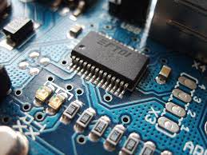
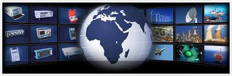

Established in 1967 Time Electronics Ltd is an UK based company that designs and manufactures calibration and metrology instruments. Our comprehensive range of products provides users with solutions for test and measurement applications within their respective industries. Models include decade boxes, electrical calibrators, digital multimeters, process calibrators, pressure testing instruments and calibration software. In addition we manufacture customised multifunction test benches, and design and supply turnkey calibration labs, electrical and instrument workshops, and engineer training centres.
During our 50 years of continuous development we have used innovative engineering to develop performance products for automated calibration applications. Our software driven solutions enable users to manage, automate, and optimise the calibration process. They increase efficiency and productivity, reduce testing times and provide customers with the features and capabilities to achieve compliance with quality standards.
Quality is an integral part of our company philosophy. In addition to building accurate and durable test instruments we provide extensive technical support. We focus on establishing strong business relationships based on customer satisfaction and commitment to providing quality products and services.
This has given us a valuable reputation with organisations worldwide, and is one reason for our continued success in international markets. We have a global distribution network and are represented by companies with strong technical capabilities and skilled engineers.